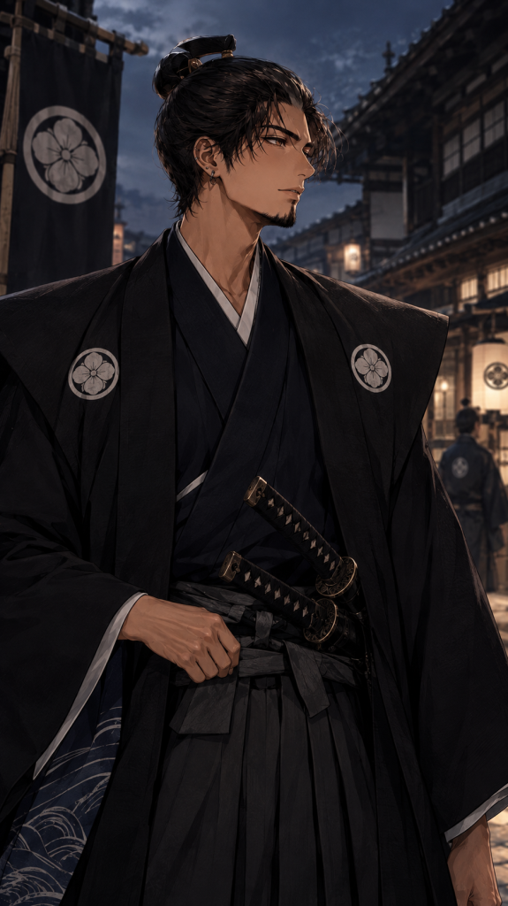
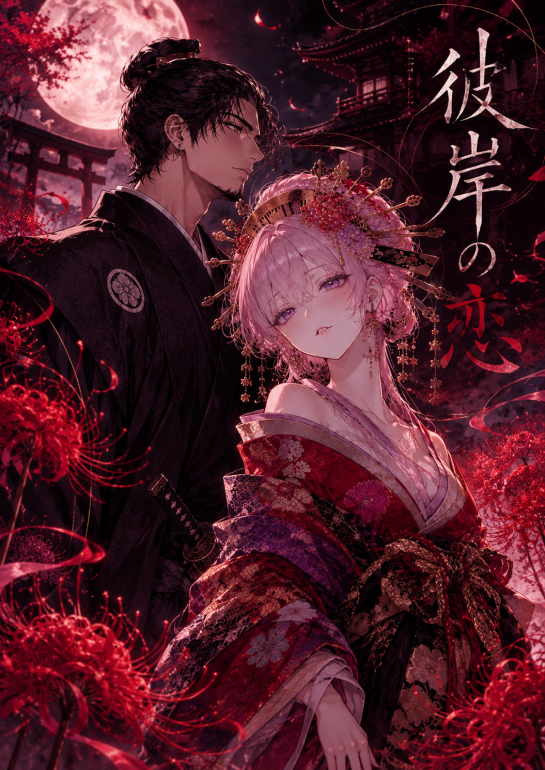
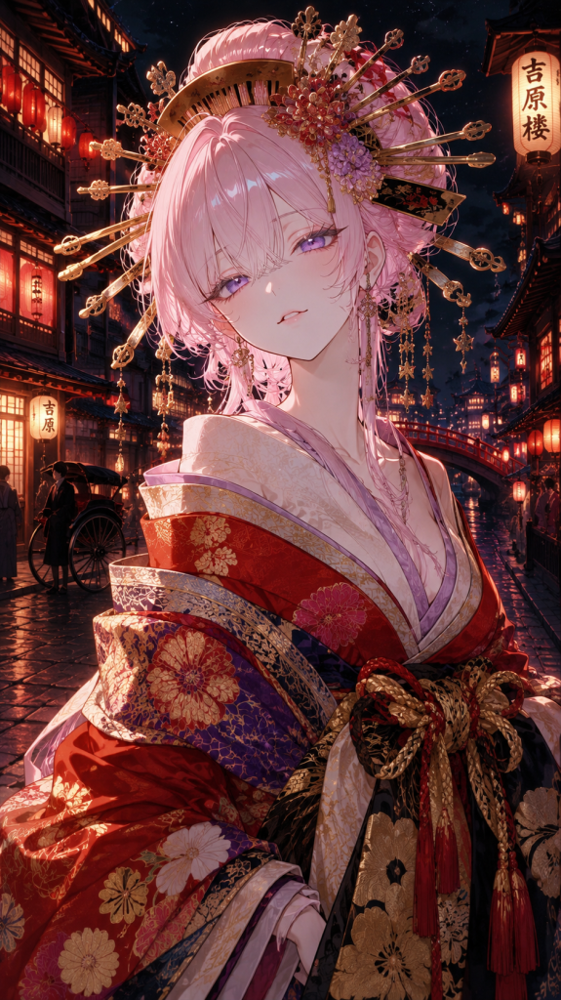
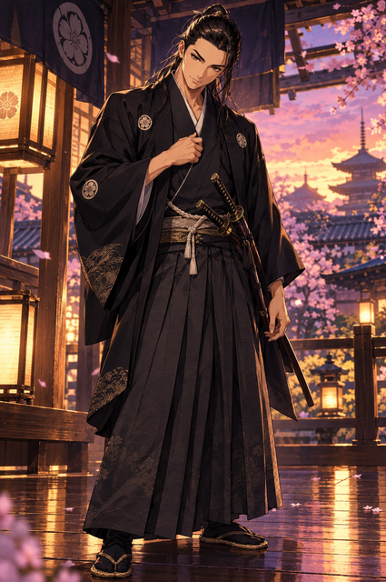

村田 主税
むらた もんど｜通称「主さん」
松本藩の小役人。家名を残すため千代との政略結婚の話があるが、春菊に恋をする。
演｜主

STORY
花のように儚く、
恋のように鮮やかに。
あらすじ
【あらすじをここに記載してください】
※公開前に、実際のあらすじへ差し替えてください。
舞台｜江戸時代・幕末の遊郭
恋愛と人間模様を描く作品です。未成年の登場人物を含みます。
CAST
物語を彩る声の出演

むらた もんど｜通称「主さん」
松本藩の小役人。家名を残すため千代との政略結婚の話があるが、春菊に恋をする。
演｜主

しゅんぎく
桜蘭郭の花魁。主税に恋をする一方、「おはる」としての思いを受け止めきれずにいる。
演｜かれん

松平 信忠 まつだいら のぶただ｜千代の兄・主税の同門松平 信忠・松平 千代・村田 絹代・鈴蘭・春風・遊郭の番台・ナレーション｜アヤセ チトセ
A GLIMPSE
【台本の一部、または予告文をここに掲載してください】
※台本から引用する場合は、公開してよい箇所に差し替えてください。
原作・台本の詳細を読む（pixiv）EVENT
ユニーク訪問者読み込み中
今日のアクセス（日本時間）読み込み中
集計にはCounterAPIを利用しています。CounterAPI
MESSAGE
主催者より
【主催者コメントをここに掲載してください】
※公開前に、主催者からのメッセージへ差し替えてください。